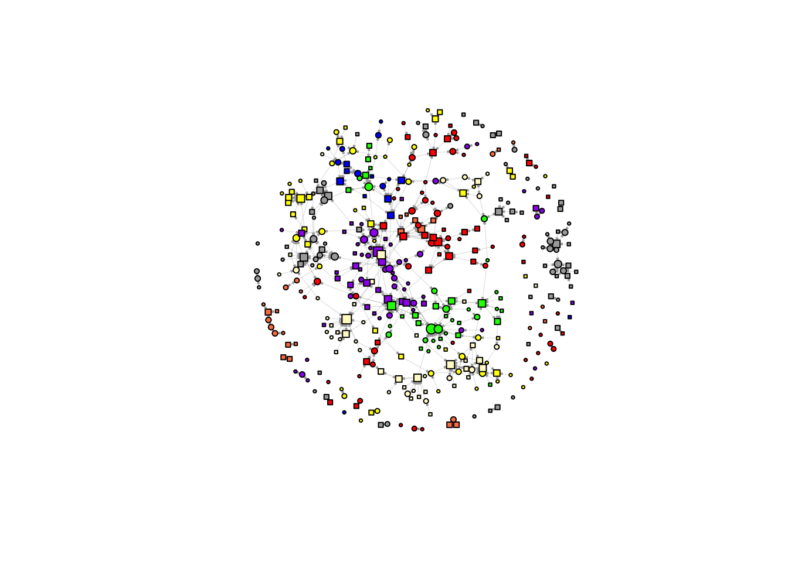
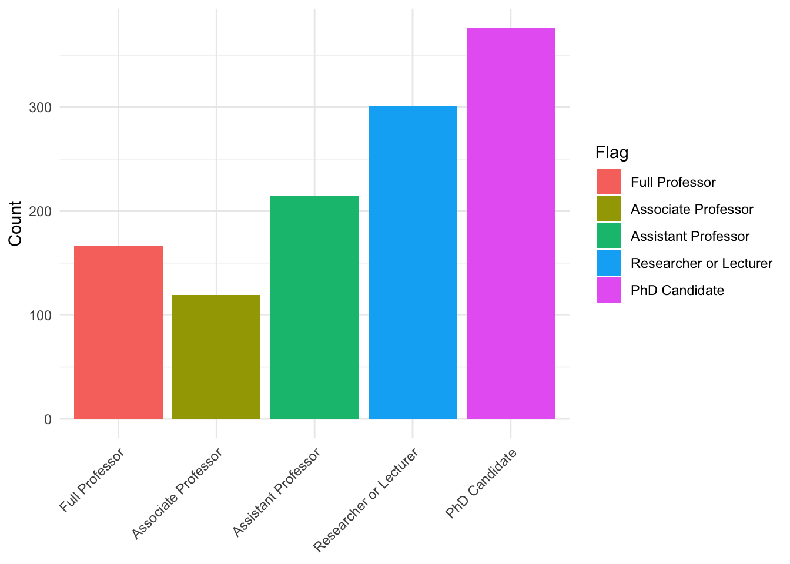

Descriptive Analysis
Getting Started
Functions
limit_observation_period()
Restrict the edge table to co-authorships published on or after a given start date.
Arguments
data
Named list containing an
edge_tableelement with apublication_datecolumn.
start_date
Character string (parseable by
ymd()) or date giving the earliest publication date to keep. Defaults to"2020-01-01".
Method
The function filters data[['edge_table']] to rows where publication_date >= ymd(start_date) and returns the updated list.
determine_complete_cases()
Flag scholars by data completeness and create a nodes table of analysis-ready scholars.
Arguments
data
Named list containing
scholars_oa(list of tibbles withhas_author_idanduid),edge_table(withuidanda__uid), anddemographics(withuid, position columns, and other scholar metadata).
Method
The function identifies two sets of UIDs: scholars with a valid OpenAlex author ID (has_oa) and scholars who appear as a focal author in at least one co-authored work during the observation period (has_work). It adds a flag column to demographics coded "is_complete", "no_works", or "no_oa", and an is_staff indicator that is TRUE when all three position columns (position_22, position_24, position_25) are either NA or "staff". A nodes table is created by retaining only scholars flagged "is_complete" and not is_staff.
determine_complete_cases <-function(data) {
# authors with valid OpenAlex id
has_oa <- data[['scholars_oa']] |>
bind_rows() |>
filter(has_author_id) |>
distinct(uid) |> pull()
# authors with published works during observation period
has_work <- data[['edge_table']] |>
filter(uid != a__uid) |>
distinct(uid) |> pull()
data[['demographics']] <-data[['demographics']] |>
mutate(
flag = ifelse(
uid %in% has_work, 'is_complete',
ifelse(
uid %in% has_oa, 'no_works', 'no_oa'
)
),
is_staff = dplyr::if_all(
c(position_22, position_24, position_25),
~ is.na(.x) | (.x == "staff")
)
)
data[['nodes']] = data[['demographics']] |>
filter(flag == 'is_complete', !is_staff)
return(data)
}select_sample_matrix()
Subset an existing matrix to the rows and columns corresponding to a given sample of UIDs, padding with NA for UIDs not present in the original.
Arguments
d0
A named numeric matrix with rows and columns indexed by UID strings.
sample
Character vector of UIDs defining the desired output dimensions.
Method
The function initializes an NA matrix of dimension length(sample) × length(sample). It finds the intersection of sample with the existing row and column names of d0 and copies the overlapping block into the corresponding positions of the new matrix.
select_sample_matrix <- function(d0, sample){
# target: full samp x samp, default NA
d <- matrix(NA_real_, nrow = length(sample), ncol = length(sample),
dimnames = list(sample, sample))
# overlap between samp and existing d0 row/col names
r <- intersect(sample, rownames(d0))
c <- intersect(sample, colnames(d0))
keep <- intersect(r, c)
# copy existing values into the right positions
d[keep, keep] <- d0[keep, keep, drop = FALSE]
return(d)
}select_sample_intdis()
Subset the interdisciplinarity matrix to a given sample of scholars, padding with NA for missing rows.
Arguments
topics
Named list containing an
intdissub-list whosesubfieldelement is a matrix with rows indexed by UID and columns indexed by year.
sample
Character vector of UIDs defining the desired row set.
Method
The function extracts topics[["intdis"]][["subfield"]], initializes a new matrix with sample as row names and the same column names as the original, and copies rows that are present in both sample and the original. Rows not found in the original are left as NA.
select_sample_intdis <- function(topics, sample){
t0 <- topics[["intdis"]][["subfield"]]
t <- matrix(NA_real_, nrow = length(sample), ncol = length(colnames(t0)),
dimnames = list(sample, colnames(t0)))
# fill rows that exist in original t0
keep <- intersect(sample, rownames(t0))
t[keep, ] <- t0[keep, , drop = FALSE]
return(t)
}make_adjacency_matrix()
Build a co-authorship adjacency matrix for a specified set of scholars and time window.
Arguments
data
Named list with a
workselement (named list of per-scholar works tibbles containinguid,work_id,authorships,publication_date, andpublication_year).
uids
Character vector of focal scholar UIDs defining the rows and columns of the output matrix.
type
Character string controlling which author position is treated as the focal node.
"first"and"last"use the author at that position;"all"creates a full crossing of all co-authors on each work. Defaults to"first".
min_year
Integer year or Date giving the lower bound of the publication window (inclusive).
max_year
Integer year or Date giving the upper bound of the publication window (inclusive).
weighted
Logical. If
TRUE, matrix values reflect the count of shared publications; ifFALSE, values are binarized to1L. Defaults toFALSE.
Method
The function binds the works for the requested uids, filters to the specified publication window (using publication_date for Date inputs and publication_year for integers), selects uid, work_id, and authorships, deduplicates by work_id, and unnests authorships. Depending on type, it either builds ego–alter pairs using the author at the named position or crosses all author pairs per work. Co-author pairs are counted and optionally binarized. The result is pivoted to a wide adjacency matrix, padded to the full uids dimension with zeros for absent pairs, and the diagonal is set to 0.
make_adjacency_matrix <- function(
data, uids, type = 'first', min_year = 2020, max_year = 2026, weighted = FALSE
) {
# make edgelist from works
edges <- data[['works']][uids] |>
purrr::keep(~ nrow(.x) > 0) |>
bind_rows()
if (inherits(min_year, "Date")) {
edges <- edges |> filter(publication_date >= min_year, publication_date <= max_year)
} else {
edges <- edges |> filter(publication_year >= min_year, publication_year <= max_year)
}
edges <- edges |>
select(uid, work_id, authorships) |>
rename(e_uid = uid) |>
distinct(work_id, .keep_all = TRUE) |>
unnest(authorships)
if (type != 'all') {
edges <- edges |>
group_by(work_id) |>
mutate(
e_uid = uid[author_position == type][1]
) |> ungroup() |>
filter(!is.na(e_uid), e_uid != uid) |>
select(work_id, e_uid, uid)
} else {
edges <- edges |>
group_by(work_id) |>
reframe(
tidyr::crossing(
e_uid = uid,
uid = uid
)
) |>
ungroup() |>
filter(!is.na(e_uid), e_uid != uid) |>
select(work_id, e_uid, uid)
}
# calculate the number of edges between ego and alters.
edge_counts <- edges |> count(e_uid, uid, name="w")
# convert counts to incidences
if (!weighted) {
edge_counts <- edge_counts %>% mutate(w = 1L)
}
# all nodes appearing as ego or alter
nodes <- sort(unique(c(edge_counts$e_uid, edge_counts$uid)))
# complete matrix grid and pivot to wide
adj <- edge_counts %>%
rename(from = e_uid, to = uid) %>%
complete(from = nodes, to = nodes, fill = list(w = 0)) %>%
pivot_wider(names_from = to, values_from = w) %>%
arrange(from)
# convert to matrix and set rownames
mat <- adj %>% as.data.frame()
row_ids <- mat$from
mat$from <- NULL
mat <- as.matrix(mat)
rownames(mat) <- row_ids
diag(mat) <- 0
# make sure the matrices are consistent across waves
all_uids <- as.character(uids)
# indices of existing rows/cols in desired order
ri <- match(all_uids, rownames(mat))
ci <- match(all_uids, colnames(mat))
# start with full NA matrix
mat_full <- matrix(0L, nrow = length(all_uids), ncol = length(all_uids),
dimnames = list(all_uids, all_uids))
# copy overlap block
mat_full[!is.na(ri), !is.na(ci)] <- mat[ri[!is.na(ri)], ci[!is.na(ci)], drop = FALSE]
mat <- mat_full
mat
}fcolnet2()
Build a multi-wave co-authorship network filtered by university, position, and discipline.
Arguments
data
Named list with a
demographicselement (containinguid,university_*,discipline_*, andposition_*columns) and aworkselement used bymake_adjacency_matrix().
university
Character vector of university abbreviations to include. Defaults to all eight valid Dutch universities.
position
Character vector of academic positions to include. Defaults to all five valid positions.
discipline
Character vector of disciplines to include. Defaults to
"Sociology"and"Political Sciences".
type
Character string or
NULL. IfNULL, adjacency matrices are built for"first","last", and"all"authorship types; otherwise the single specified type is used.
waves
List of two-element vectors specifying the start and end of each observation wave. Defaults to three waves roughly corresponding to 2019–2022, 2023–2024, and 2025–2026.
Method
The function validates each filter argument against its allowed values using an internal helper. It filters demographics to scholars who appear with at least one of the specified universities, disciplines, and positions across the three measurement years. For each wave (and optionally each authorship type), it calls make_adjacency_matrix() with the corresponding year bounds. The function returns a list with data (the filtered demographics tibble) and nets (the nested list of adjacency matrices).
fcolnet2 <- function(
data,
university = NULL,
position = NULL,
discipline = NULL,
type = NULL,
waves = list(c(2019, 2022), c(2023, 2024), c(2025, 2026))
){
valid_disciplines <- c("Sociology", "Political Sciences")
valid_universities <- c("UVA","EUR","UL","VU","UVG","UU","RU","UVT")
valid_positions <- c("Associate Professor","PhD Candidate","Full Professor",
"Researcher or Lecturer","Assistant Professor")
valid_dates <- list(c(ymd('20201219'), ymd('20221219')),
c(ymd('20221220'), ymd('20240419')),
c(ymd('20240420'), ymd('20260201')))
# helper: set default + validate
set_and_check <- function(x, valid, name = deparse(substitute(x))) {
x <- if (is.null(x)) valid else x
bad <- setdiff(unique(na.omit(x)), valid)
if (length(bad)) stop("Invalid ", name, ": ", paste(bad, collapse = ", "), call. = FALSE)
x
}
# set and check values
discipline <- set_and_check(discipline, valid_disciplines, "discipline")
university <- set_and_check(university, valid_universities, "university")
position <- set_and_check(position, valid_positions, "position")
waves <- if(is.null(waves)) valid_dates else waves
min_year <- min(unlist(waves))
max_year <- max(unlist(waves))
# step 1: make selection of nodes
authors <- data[["demographics"]] |>
filter(
if_any(c(university_22, university_24, university_25),
~ .x |>
toupper() |>
str_detect(paste(university, collapse = "|"))),
if_any(c(discipline_22, discipline_24, discipline_25),
~ .x %in% discipline),
if_any(c(position_22, position_24, position_25),
~ .x %in% position)
) |>
arrange(uid)
uids <- authors |> pull(uid) |> sort()
# step 3: create empty matrixes (wave, i, j)
nwaves <- length(waves)
nets <- list()
if (is.null(type)){
types = c('first', 'last', 'all')
for (t in types){
for (w in 1:length(waves)){
nets[[t]][[w]] <- make_adjacency_matrix(
data, uids, type = t, min_year = waves[[w]][1], max_year = waves[[w]][2])
}
}
} else {
for (w in 1:length(waves)){
nets[[w]] <- make_adjacency_matrix(
data, uids, type, min_year = waves[[w]][1], max_year = waves[[w]][2])
}
}
# step 4: fill nets
output <- list(
data = authors,
nets = nets
)
return(output)
}compute_ego_statistics()
Compute per-scholar network centrality statistics from an igraph network object.
Arguments
nets
A list with at least a
graphelement (an igraph object) and optionally adataelement (a demographics tibble with auidcolumn).
Method
The function checks whether the graph is directed and computes total, in-, and out-degree (filling NA for undirected graphs), normalized betweenness centrality, and normalized closeness centrality for every vertex. These are assembled into a tibble indexed by vertex name as uid. If nets$data contains a uid column, the centrality tibble is right-joined to demographics and a subset of personal identifier columns is dropped before returning the result.
compute_ego_statistics <- function(nets) {
g <- nets$graph
stopifnot(inherits(g, "igraph"))
is_dir <- igraph::is_directed(g)
# 1) Basic degrees
degree_total <- igraph::degree(
g,
mode = if (is_dir) "all" else "total"
)
degree_in <- if (is_dir) {
igraph::degree(g, mode = "in")
} else {
rep(NA_real_, igraph::vcount(g))
}
degree_out <- if (is_dir) {
igraph::degree(g, mode = "out")
} else {
rep(NA_real_, igraph::vcount(g))
}
# 2) Betweenness (normalized)
betweenness <- igraph::betweenness(
g,
directed = is_dir,
normalized = TRUE
)
# 3) Closeness (normalized)
closeness <- suppressWarnings(
igraph::closeness(
g,
mode = if (is_dir) "all" else "all",
normalized = TRUE
)
)
# 4) Assemble into a tibble
stats <- tibble::tibble(
uid = igraph::V(g)$name,
degree = as.numeric(degree_total),
indegree = as.numeric(degree_in),
outdegree = as.numeric(degree_out),
betweenness = as.numeric(betweenness),
closeness = as.numeric(closeness),
)
# 9) Optionally add demographics stored in nets$data
if (!is.null(nets$data) && "uid" %in% colnames(nets$data)) {
stats <- nets$data |>
right_join(stats, by = "uid") |>
arrange(uid) |>
select(!initials:maiden_name) |>
select(!gender_prob:origin)
}
return(stats)
}group_means()
Summarize mean network centrality statistics by a grouping variable.
Arguments
df
A tibble containing
degree,betweenness, andclosenesscolumns (as produced bycompute_ego_statistics()) along with the grouping column.
group_var
Character string naming the column to group by (e.g.
"gender","last_position").
Method
The function filters out rows where group_var is NA, groups by that variable, and computes the count of scholars and the mean of degree, betweenness, and closeness. The grouping column is renamed to group and a group_var identifier column is prepended to facilitate downstream bind_rows() calls.
group_means <- function(df, group_var) {
df |>
filter(!is.na(.data[[group_var]])) |>
group_by(.data[[group_var]]) |>
summarise(
n = n(),
degree_mean = mean(degree, na.rm = TRUE),
betweenness_mean = mean(betweenness, na.rm = TRUE),
closeness_mean = mean(closeness, na.rm = TRUE),
.groups = "drop"
) |>
rename(group = 1) |>
mutate(group_var = group_var, .before = group)
}pairwise_ttests_with_stats()
Run pairwise Welch t-tests across all group level combinations for multiple network metrics.
Arguments
df
A tibble with scholar-level metrics and at least the columns named in
group_varandmetrics.
group_var
Character string naming the grouping column (e.g.
"last_position","migrant").
metrics
Character vector of metric column names to test. Defaults to
c("degree", "betweenness", "closeness").
p_adjust
Character string naming the p-value adjustment method passed to
p.adjust(). Defaults to"holm".
Method
The function converts group_var to a factor (dropping unused levels after filtering NAs), enumerates all unordered pairs of group levels using combn(), and for each pair runs a Welch t-test per metric using broom::tidy() to extract results. The output is a tibble with columns for the group variable, metric, the two group labels, t-statistic, degrees of freedom, mean difference, confidence interval bounds, raw p-value, and a Holm-adjusted p-value computed within each (group_var, metric) combination.
pairwise_ttests_with_stats <- function(
df, group_var, metrics = c("degree","betweenness","closeness"),
p_adjust = "holm"
) {
df2 <- df |>
filter(!is.na(.data[[group_var]])) |>
select(all_of(c(group_var, metrics))) |>
mutate("{group_var}" := droplevels(as.factor(.data[[group_var]])))
# all unordered pairs of group levels
lvls <- levels(df2[[group_var]])
pairs <- combn(lvls, 2, simplify = FALSE)
# long metrics
df_long <- df2 |>
pivot_longer(all_of(metrics), names_to = "metric", values_to = "value")
out <- map_dfr(pairs, function(pr) {
g1 <- pr[[1]]; g2 <- pr[[2]]
df_pair <- df_long |>
filter(.data[[group_var]] %in% c(g1, g2)) |>
mutate(g = droplevels(.data[[group_var]]))
df_pair |>
group_by(metric) |>
summarise(
test = list(t.test(value ~ g)), # Welch by default
.groups = "drop"
) |>
mutate(tidy = map(test, broom::tidy)) |>
unnest(tidy) |>
transmute(
group_var = group_var,
metric,
group1 = g1,
group2 = g2,
statistic = as.numeric(statistic), # this is t
parameter = as.numeric(parameter), # df
estimate = estimate, # diff in means (group2 - group1) per broom
conf.low, conf.high,
p_value = p.value,
method
)
})
# adjust p-values within each (group_var, metric)
out |>
group_by(group_var, metric) |>
mutate(p_adj = p.adjust(p_value, method = p_adjust)) |>
ungroup()
}Application
[1] 936[1] 936net <- fcolnet2(data,
type = 'first',
waves = list(c(2020, 2026))
)
noisolate <- rowSums(net$nets[[1]], na.rm = TRUE) > 0
net$nets[[1]] = net$nets[[1]][noisolate, noisolate]
net$graph <- igraph::graph_from_adjacency_matrix(
net$nets[[1]],
mode = "directed",
weighted = NULL,
diag = FALSE,
add.colnames = NULL)
df_ego <- net$data |>
filter(uid %in% colnames(net$nets[[1]]))|>
mutate(
uni = coalesce(university_22_first, university_24_first, university_25_first) |>
toupper()
) |>
arrange(uid)
l <- layout_with_fr(net$graph, niter = 1500)
plot(net$graph,
vertex.color = ifelse(df_ego$uni == "UVA", "red",
ifelse(df_ego$uni == "UVG", "lemonchiffon",
ifelse(df_ego$uni == "VU", "darkgrey",
ifelse(df_ego$uni == "UVT", "blue",
ifelse(df_ego$uni == "RU", "purple",
ifelse(df_ego$uni == "EUR", "yellow",
ifelse(df_ego$uni == "UU", "green",
ifelse(df_ego$uni == "UL", "coral", "white")))))))),
vertex.shape = ifelse(df_ego$gender == 'female', "circle", 'square'),
vertex.size = 2 + igraph::degree(net$g, mode = 'in') ^ 0.5,
vertex.label = NA,
vertex.size = 4,
edge.width = 0.2,
edge.arrow.size = 0.1,
layout = l)
net_first <- fcolnet2(data,
type = 'first',
waves = list(c(2019, 2026))
)
noisolate = rowSums(net_first$nets[[1]]) > 0
# net_first$nets[[1]] <- net_first$nets[[1]][noisolate, noisolate]
net_first$graph <- igraph::graph_from_adjacency_matrix(
net_first$nets[[1]],
mode = c("directed"),
weighted = NULL,
diag = FALSE,
add.colnames = NULL,)
net_last <- fcolnet2(data,
type = 'last',
waves = list(c(2019, 2026))
)
noisolate <- rowSums(net_last$nets[[1]]) > 0
# net_last$nets[[1]] <- net_last$nets[[1]][noisolate, noisolate]
net_last$graph <- igraph::graph_from_adjacency_matrix(
net_last$nets[[1]],
mode = c("directed"),
weighted = NULL,
diag = FALSE,
add.colnames = NULL,)desc_data <- data[["demographics"]] |>
mutate(
first_affiliation = coalesce(university_22_first, university_24_first, university_25_first) |> toupper(),
last_position = factor(
coalesce(position_25, position_24, position_22),
levels = c(
"Full Professor", "Associate Professor", "Assistant Professor",
"Researcher or Lecturer", "PhD Candidate"
)
),
gender = factor(gender, levels = c("female", "male")),
migrant = factor(migrant, levels = c("NL", "M4", "other"))
)
desc <- desc_data |>
select(gender, migrant, first_affiliation, last_position) |>
pivot_longer(everything(), names_to = "variable", values_to = "value") |>
group_by(variable) |>
mutate(
# preserve existing factor levels when present; otherwise make a factor
value = if (is.factor(value)) value else factor(value),
value = fct_explicit_na(value, na_level = "Missing"),
# make sure "Missing" goes last
value = fct_relevel(value, "Missing", after = Inf)
) |>
count(variable, value, name = "n") |>
mutate(
prop = n / sum(n),
pct = percent(prop, accuracy = 0.1)
) |>
ungroup() |>
arrange(variable, value)
descplot_df <- data[["demographics"]] |>
mutate(
position = factor(
coalesce(position_25, position_24, position_22),
levels = c(
"Full Professor", "Associate Professor", "Assistant Professor",
"Researcher or Lecturer", "PhD Candidate"
)
),
flag = forcats::fct_na_value_to_level(as.factor(position))
) |>
filter(!is.na(position)) |>
count(position, flag)
ggplot(plot_df, aes(x = position, y = n, fill = flag)) +
geom_col() +
labs(x = NULL, y = "Count", fill = "Flag") +
theme_minimal() +
theme(axis.text.x = element_text(angle = 45, hjust = 1))
plot_df <- data[["demographics"]] |>
mutate(
# position = factor(
# coalesce(position_25, position_24, position_22),
# levels = c(
# "Full Professor", "Associate Professor", "Assistant Professor",
# "Researcher or Lecturer", "PhD Candidate"
# )
# ),
flag = forcats::fct_na_value_to_level(as.factor(migrant))
) |>
filter(!is.na(migrant)) |>
count(migrant, flag)
ggplot(plot_df, aes(x = migrant, y = n, fill = flag)) +
geom_col() +
labs(x = NULL, y = "Count", fill = "Flag") +
theme_minimal() +
theme(axis.text.x = element_text(angle = 45, hjust = 1))
ego <- net$stats$ego |>
mutate(
first_affiliation = coalesce(university_22_first, university_24_first, university_25_first) |> toupper(),
last_position = factor(
coalesce(position_25, position_24, position_22),
levels = c(
"Full Professor", "Associate Professor", "Assistant Professor",
"Researcher or Lecturer", "PhD Candidate"
)
),
gender = factor(gender, levels = c("female", "male")),
migrant = factor(migrant, levels = c("NL", "M4", "other"))
)
means_by_gender <- group_means(ego, "gender")
means_by_position <- group_means(ego, "last_position")
means_by_migrant <- group_means(ego, "migrant")
means_by_affiliation <- group_means(ego, "first_affiliation")
means_all <- bind_rows(means_by_gender, means_by_position, means_by_migrant, means_by_affiliation)
means_allplot_data <- means_all |>
pivot_longer(
cols = c(degree_mean, betweenness_mean, closeness_mean),
names_to = "metric",
values_to = "mean"
) |>
mutate(
metric = factor(
metric,
levels = c("degree_mean", "betweenness_mean", "closeness_mean"),
labels = c("Degree", "Betweenness", "Closeness")
)
)
base_theme <- theme_minimal() +
theme(
axis.text.x = element_text(angle = 45, hjust = 1),
panel.grid.major.x = element_blank(),
legend.position = "none"
)
pal <- c(
"female" = "#fca5a5",
"male" = "#b91c1c",
"NL" = "#93c5fd",
"M4" = "#3b82f6",
"other" = "#1d4ed8",
"Full Professor" = "#14532d",
"Associate Professor" = "#166534",
"Assistant Professor" = "#16a34a",
"Researcher or Lecturer" = "#4ade80",
"PhD Candidate" = "#bbf7d0"
)
p_degree <- plot_data |>
filter(metric == "Degree") |>
ggplot(aes(x = group, y = mean, fill = group)) +
geom_col() +
facet_wrap(~ group_var, scales = "free_x") +
coord_cartesian(ylim = c(0, 6)) +
scale_fill_manual(values = pal) +
labs(
x = NULL,
y = "Mean degree",
title = "Average degree by group"
) +
base_theme
p_betweenness <- plot_data |>
filter(metric == "Betweenness") |>
ggplot(aes(x = group, y = mean, fill = group)) +
geom_col() +
facet_wrap(~ group_var, scales = "free_x") +
coord_cartesian(ylim = c(0, 0.01)) +
scale_fill_manual(values = pal) +
labs(
x = NULL,
y = "Mean betweenness",
title = "Average betweenness by group"
) +
base_theme
p_closeness <- plot_data |>
filter(metric == "Closeness") |>
ggplot(aes(x = group, y = mean, fill = group)) +
geom_col() +
facet_wrap(~ group_var, scales = "free_x") +
coord_cartesian(ylim = c(0, 1)) +
scale_fill_manual(values = pal) +
labs(
x = NULL,
y = "Mean closeness",
title = "Average closeness by group"
) +
base_theme
p_degree


tt_gender <- ego |>
filter(!is.na(gender)) |>
pivot_longer(c(degree, betweenness, closeness), names_to = "metric", values_to = "value") |>
group_by(metric) |>
summarise(
test = list(t.test(value ~ gender)),
.groups = "drop"
) |>
mutate(tidy = map(test, broom::tidy)) |>
select(metric, tidy) |>
unnest(tidy) |>
mutate(
group_var = 'gender',
group1 = 'female',
group2 = 'male'
) |>
relocate(group_var, .before = metric) |>
relocate(group1, group2, .after = metric) |>
select(-estimate1, -estimate2, -alternative) |>
rename(p_value = p.value)
tt_genderego2 <- net_first$stats$ego |>
mutate(
first_affiliation = coalesce(university_22_first, university_24_first, university_25_first) |> toupper(),
last_position = factor(
coalesce(position_25, position_24, position_22),
levels = c(
"Full Professor", "Associate Professor", "Assistant Professor",
"Researcher or Lecturer", "PhD Candidate"
)
),
gender = factor(gender, levels = c("female", "male")),
migrant = factor(migrant, levels = c("NL", "M4", "other"))
)
tt_gender2 <- ego2 |>
filter(!is.na(gender)) |>
pivot_longer(c(indegree, outdegree), names_to = "metric", values_to = "value") |>
group_by(metric) |>
summarise(
test = list(t.test(value ~ gender)),
.groups = "drop"
) |>
mutate(tidy = map(test, broom::tidy)) |>
select(metric, tidy) |>
unnest(tidy)|>
mutate(
group_var = 'gender',
group1 = 'female',
group2 = 'male'
) |>
relocate(group_var, .before = metric) |>
relocate(group1, group2, .after = metric) |>
select(-estimate1, -estimate2, -alternative) |>
rename(p_value = p.value)
tt_position2 <- ego2|>
pairwise_ttests_with_stats('last_position', metrics = c('indegree', 'outdegree'))
tt_migrant2 <- ego2|>
pairwise_ttests_with_stats('migrant', metrics = c('indegree', 'outdegree'))
tt_affiliation2 <- ego2|>
pairwise_ttests_with_stats('first_affiliation', metrics = c('indegree', 'outdegree'))
tt_gender2desc_table = desc |>
select(-pct) |>
left_join(
means_all |> select(-n),
by = join_by(
variable == group_var,
value == 'group'
)
) |>
mutate(
variable = case_when(
variable == 'first_affiliation' ~ 'Affiliation',
variable == 'gender' ~ 'Gender',
variable == 'last_position' ~ 'Position',
variable == 'migrant' ~ 'Migration Background'
),
value = case_when(
value == 'M4' ~ 'Minority',
value == 'NL' ~ 'Majority',
value == 'other' ~ 'Other',
value == 'female' ~ 'Female',
value == 'male' ~ 'Male',
.default = value
),
variable = factor(
variable,
levels = c('Gender', 'Migration Background', 'Affiliation', 'Position')
),
value = factor(
value,
levels = c(
'Female', 'Male', 'Majority', 'Minority', 'Other', 'EUR', 'RU', 'UL',
'UU', 'UVA', 'UVG', 'UVT', 'VU', 'Full Professor', 'Associate Professor',
'Assistant Professor', 'Researcher or Lecturer', 'PhD Candidate', 'Missing'
)
)
) |>
arrange(variable, value)
saveRDS(desc_table, file = file.path('results', 'tables', 'desc.Rds'))
gt_desc_table = desc_table |>
group_by(variable) |>
gt() |>
cols_label(
.list = c(
"variable" = "",
"value" = "",
"n" = 'N',
"prop" = '%',
'degree_mean' = 'Degree',
'betweenness_mean' = 'Betweenness',
'closeness_mean' = 'Closeness'
)
) |>
tab_spanner(
label = 'Centrality',
columns = c(degree_mean, betweenness_mean, closeness_mean)) |>
fmt_number(decimals = 3, drop_trailing_zeros = FALSE) |>
fmt_number(columns = 3, decimals = 0) |>
fmt_percent(columns = 4) |>
fmt_missing( missing_text = '') |>
cols_align(columns = 2, align = 'left') |>
cols_align(
columns = c(degree_mean, betweenness_mean, closeness_mean),
align = 'center'
)
saveRDS(gt_desc_table, file = file.path('results', 'tables', 'gtdesc.Rds'))
gt_desc_table| N | % |
Centrality
|
|||
|---|---|---|---|---|---|
| Degree | Betweenness | Closeness | |||
| Gender | |||||
| Female | 669 | 51.34% | 2.585 | 0.001 | 0.285 |
| Male | 619 | 47.51% | 3.349 | 0.002 | 0.304 |
| Missing | 15 | 1.15% | |||
| Migration Background | |||||
| Majority | 681 | 52.26% | 3.298 | 0.002 | 0.283 |
| Minority | 65 | 4.99% | 2.154 | 0.001 | 0.301 |
| Other | 551 | 42.29% | 2.486 | 0.001 | 0.312 |
| Missing | 6 | 0.46% | |||
| Affiliation | |||||
| EUR | 131 | 10.05% | 2.517 | 0.000 | 0.232 |
| RU | 145 | 11.13% | 3.344 | 0.002 | 0.261 |
| UL | 155 | 11.90% | 2.241 | 0.001 | 0.557 |
| UU | 89 | 6.83% | 3.927 | 0.003 | 0.175 |
| UVA | 292 | 22.41% | 2.819 | 0.002 | 0.326 |
| UVG | 176 | 13.51% | 3.231 | 0.001 | 0.162 |
| UVT | 68 | 5.22% | 3.278 | 0.003 | 0.161 |
| VU | 244 | 18.73% | 2.513 | 0.000 | 0.441 |
| Missing | 3 | 0.23% | |||
| Position | |||||
| Full Professor | 166 | 12.74% | 5.545 | 0.004 | 0.280 |
| Associate Professor | 119 | 9.13% | 3.550 | 0.002 | 0.308 |
| Assistant Professor | 214 | 16.42% | 3.150 | 0.002 | 0.292 |
| Researcher or Lecturer | 301 | 23.10% | 2.179 | 0.000 | 0.316 |
| PhD Candidate | 376 | 28.86% | 1.713 | 0.000 | 0.285 |
| Missing | 127 | 9.75% | |||
tt <- bind_rows(
tt_gender, tt_gender2,
tt_position, tt_position2,
tt_migrant, tt_migrant2,
tt_affiliation, tt_affiliation2
) |>
mutate(
metric = factor(
metric, levels = c(
'betweenness', 'closeness', 'degree', 'indegree', 'outdegree')),
group_var = case_when(
group_var == 'first_affiliation' ~ 'Affiliation',
group_var == 'gender' ~ 'Gender',
group_var == 'last_position' ~ 'Position',
group_var == 'migrant' ~ 'Migration Background'
) |>
factor(
levels = c('Gender', 'Migration Background', 'Affiliation', 'Position')
),
group1 = case_when(
group1 == 'female' ~ 'Female',
group1 == 'male' ~ 'Male',
group1 == 'NL' ~ 'Majority',
group1 == 'M4' ~ 'Minority',
group1 == 'other' ~ 'Other',
.default = group1
),
group2 = case_when(
group2 == 'female' ~ 'Female',
group2 == 'male' ~ 'Male',
group2 == 'NL' ~ 'Majority',
group2 == 'M4' ~ 'Minority',
group2 == 'other' ~ 'Other',
.default = group2
),
stars = case_when(
p_value < 0.001 ~ "***",
p_value < 0.01 ~ "**",
p_value < 0.05 ~ "*",
TRUE ~ ""
),
f = sprintf("%.3f(%.0f)%s", statistic, parameter, stars)
) |>
arrange(group_var, metric) |>
select(!statistic:stars) |>
pivot_wider(
id_cols = c(group_var, group1, group2),
names_from = metric,
values_from = c(estimate, f),
names_glue = "{metric}_{.value}"
) |>
(\(x) dplyr::select(
x,
group_var,
group1,
group2,
all_of(sort(setdiff(names(x), c("group_var", "group1", "group2"))))
))()
saveRDS(tt, file = file.path('results', 'tables', 'ttest.Rds'))
gt_tt = tt |>
group_by(group_var) |>
gt() |>
cols_label_with(
fn = \(x) x |>
stringr::str_replace("^degree", "") |>
stringr::str_replace("^betweenness", "") |>
stringr::str_replace("^closeness", "") |>
stringr::str_replace("^indegree", "") |>
stringr::str_replace("^outdegree", "") |>
stringr::str_replace("_estimate$", "ΔM") |>
stringr::str_replace("_f$", "t(df)")
) |>
cols_label(
group_var = "",
group1 = "",
group2 = ""
) |>
cols_merge(
columns = c(group1, group2),
pattern = "({1} - {2})"
) |>
tab_spanner(
label = 'Degree',
columns = c(degree_estimate, degree_f)) |>
tab_spanner(
label = 'In-Degree',
columns = c(indegree_estimate, indegree_f)) |>
tab_spanner(
label = 'Out-Degree',
columns = c(outdegree_estimate, outdegree_f)) |>
tab_spanner(
label = 'Closeness',
columns = c(closeness_estimate, closeness_f)) |>
tab_spanner(
label = 'Betweenness',
columns = c(betweenness_estimate, betweenness_f)) |>
fmt_number(decimals = 3)
saveRDS(gt_tt, file = file.path('results', 'tables', 'gtttest.Rds'))
gt_tt
Betweenness
|
Closeness
|
Degree
|
In-Degree
|
Out-Degree
|
||||||
|---|---|---|---|---|---|---|---|---|---|---|
| ΔM | t(df) | ΔM | t(df) | ΔM | t(df) | ΔM | t(df) | ΔM | t(df) | |
| Gender | ||||||||||
| (Female - Male) | −0.001 | -1.192(322) | −0.019 | -0.662(363) | −0.764 | -2.639(357)** | −0.237 | -2.241(1051)* | 0.030 | 0.419(1155) |
| Migration Background | ||||||||||
| (Majority - Minority) | 0.001 | 1.159(41) | −0.018 | -0.370(29) | 1.144 | 2.844(46)** | 0.655 | 4.547(151)*** | 0.072 | 0.433(76) |
| (Majority - Other) | 0.001 | 1.511(386) | −0.029 | -0.882(240) | 0.812 | 2.849(370)** | 0.618 | 5.970(978)*** | 0.311 | 4.309(1106)*** |
| (Minority - Other) | 0.000 | -0.262(35) | −0.010 | -0.189(38) | −0.332 | -0.837(43) | −0.037 | -0.294(91) | 0.239 | 1.456(73) |
| Affiliation | ||||||||||
| (EUR - RU) | −0.002 | -2.385(67)* | −0.029 | -0.649(107) | −0.827 | -1.600(99) | −0.169 | -0.650(223) | −0.407 | -2.388(228)* |
| (EUR - UL) | −0.001 | -0.676(29) | −0.325 | -4.005(36)*** | 0.275 | 0.638(58) | 0.657 | 4.252(175)*** | 0.545 | 4.669(235)*** |
| (EUR - UU) | −0.002 | -2.657(42)* | 0.057 | 1.647(55) | −1.410 | -2.083(53)* | −0.567 | -1.430(97) | −0.390 | -2.077(128)* |
| (EUR - UVA) | −0.001 | -2.358(79)* | −0.093 | -1.741(115) | −0.303 | -0.749(128) | 0.376 | 2.323(207)* | 0.235 | 1.913(285) |
| (EUR - UVG) | −0.001 | -0.767(54) | 0.070 | 2.024(55)* | −0.714 | -1.401(82) | 0.073 | 0.313(255) | −0.019 | -0.133(267) |
| (EUR - UVT) | −0.002 | -1.866(17) | 0.071 | 2.038(56)* | −0.761 | -1.199(24) | 0.268 | 1.168(130) | 0.250 | 1.400(106) |
| (EUR - VU) | 0.000 | 0.986(110) | −0.208 | -3.876(122)*** | 0.004 | 0.011(138) | 0.297 | 1.770(231) | 0.229 | 1.948(254) |
| (RU - UL) | 0.001 | 0.810(55) | −0.295 | -3.751(33)*** | 1.102 | 1.933(89) | 0.826 | 3.660(151)*** | 0.952 | 6.108(187)*** |
| (RU - UU) | −0.001 | -0.500(88) | 0.086 | 2.982(59)** | −0.583 | -0.754(79) | −0.399 | -0.928(127) | 0.017 | 0.080(174) |
| (RU - UVA) | 0.000 | 0.499(119) | −0.064 | -1.282(110) | 0.524 | 0.953(115) | 0.545 | 2.362(164)* | 0.642 | 4.000(209)*** |
| (RU - UVG) | 0.001 | 1.029(109) | 0.099 | 3.434(59)** | 0.113 | 0.179(113) | 0.242 | 0.845(261) | 0.388 | 2.198(246)* |
| (RU - UVT) | −0.001 | -0.455(29) | 0.100 | 3.436(61)** | 0.066 | 0.090(40) | 0.437 | 1.548(180) | 0.657 | 3.182(152)** |
| (RU - VU) | 0.002 | 2.618(65)* | −0.179 | -3.567(118)*** | 0.831 | 1.569(108) | 0.466 | 1.983(175)* | 0.635 | 4.065(192)*** |
| (UL - UU) | −0.002 | -1.174(59) | 0.382 | 5.198(25)*** | −1.685 | -2.345(60)* | −1.225 | -3.260(79)** | −0.935 | -5.355(101)*** |
| (UL - UVA) | −0.001 | -0.495(43) | 0.231 | 2.751(41)** | −0.578 | -1.227(73) | −0.281 | -2.841(398)** | −0.310 | -3.046(392)** |
| (UL - UVG) | 0.000 | 0.064(60) | 0.395 | 5.376(25)*** | −0.989 | -1.754(79) | −0.584 | -2.968(170)** | −0.564 | -4.495(237)*** |
| (UL - UVT) | −0.002 | -1.025(37) | 0.396 | 5.381(25)*** | −1.036 | -1.527(29) | −0.389 | -2.048(72)* | −0.295 | -1.785(82) |
| (UL - VU) | 0.001 | 0.826(28) | 0.116 | 1.381(42) | −0.271 | -0.606(66) | −0.360 | -3.313(379)** | −0.316 | -3.325(368)*** |
| (UU - UVA) | 0.001 | 0.997(71) | −0.150 | -3.652(63)*** | 1.107 | 1.576(61) | 0.943 | 2.491(82)* | 0.625 | 3.496(111)*** |
| (UU - UVG) | 0.002 | 1.420(88) | 0.013 | 2.901(89)** | 0.696 | 0.906(75) | 0.641 | 1.544(114) | 0.371 | 1.919(140) |
| (UU - UVT) | 0.000 | -0.072(33) | 0.014 | 2.372(28)* | 0.649 | 0.758(51) | 0.835 | 2.027(107)* | 0.640 | 2.896(132)** |
| (UU - VU) | 0.003 | 2.852(41)** | −0.265 | -6.417(69)*** | 1.414 | 2.058(56)* | 0.865 | 2.267(84)* | 0.618 | 3.534(103)*** |
| (UVA - UVG) | 0.001 | 0.688(93) | 0.163 | 3.970(63)*** | −0.411 | -0.757(98) | −0.303 | -1.495(189) | −0.254 | -1.936(282) |
| (UVA - UVT) | −0.001 | -0.802(23) | 0.164 | 3.975(64)*** | −0.458 | -0.692(28) | −0.108 | -0.552(81) | 0.015 | 0.090(91) |
| (UVA - VU) | 0.001 | 2.678(75)** | −0.115 | -1.977(130) | 0.307 | 0.729(146) | −0.079 | -0.664(475) | −0.006 | -0.061(483) |
| (UVG - UVT) | −0.002 | -1.174(31) | 0.001 | 0.152(28) | −0.047 | -0.064(38) | 0.194 | 0.749(169) | 0.269 | 1.458(118) |
| (UVG - VU) | 0.001 | 0.963(52) | −0.278 | -6.733(69)*** | 0.718 | 1.373(90) | 0.224 | 1.079(206) | 0.248 | 1.964(253) |
| (UVT - VU) | 0.003 | 1.991(17) | −0.279 | -6.727(70)*** | 0.765 | 1.186(25) | 0.029 | 0.146(89) | −0.022 | -0.131(83) |
| Position | ||||||||||
| (Full Professor - Associate Professor) | 0.002 | 1.882(96) | −0.028 | -0.532(110) | 1.995 | 2.868(103)** | 0.713 | 2.199(270)* | −0.174 | -1.005(259) |
| (Full Professor - Assistant Professor) | 0.002 | 1.700(101) | −0.012 | -0.259(134) | 2.395 | 3.635(90)*** | 1.418 | 4.961(207)*** | 0.111 | 0.751(340) |
| (Full Professor - Researcher or Lecturer) | 0.003 | 3.204(70)** | −0.036 | -0.701(123) | 3.366 | 5.391(75)*** | 2.078 | 7.662(170)*** | 0.502 | 3.945(246)*** |
| (Full Professor - PhD Candidate) | 0.004 | 3.437(66)** | −0.005 | -0.123(122) | 3.832 | 6.272(69)*** | 2.149 | 7.950(168)*** | 0.203 | 1.596(248) |
| (Associate Professor - Assistant Professor) | 0.000 | -0.248(137) | 0.016 | 0.312(110) | 0.400 | 0.909(118) | 0.705 | 3.445(186)*** | 0.285 | 1.778(235) |
| (Associate Professor - Researcher or Lecturer) | 0.001 | 2.097(75)* | −0.008 | -0.141(114) | 1.371 | 3.548(85)*** | 1.365 | 7.430(126)*** | 0.676 | 4.762(163)*** |
| (Associate Professor - PhD Candidate) | 0.001 | 2.565(64)* | 0.023 | 0.494(91) | 1.837 | 5.042(70)*** | 1.436 | 7.872(122)*** | 0.377 | 2.657(164)** |
| (Assistant Professor - Researcher or Lecturer) | 0.001 | 2.332(98)* | −0.024 | -0.479(126) | 0.971 | 3.079(129)** | 0.660 | 6.506(263)*** | 0.391 | 3.603(361)*** |
| (Assistant Professor - PhD Candidate) | 0.002 | 2.783(85)** | 0.007 | 0.178(147) | 1.437 | 4.991(104)*** | 0.731 | 7.380(241)*** | 0.092 | 0.851(368) |
| (Researcher or Lecturer - PhD Candidate) | 0.000 | 0.894(107) | 0.031 | 0.687(108) | 0.466 | 2.372(120)* | 0.071 | 1.740(579) | −0.299 | -3.773(664)*** |